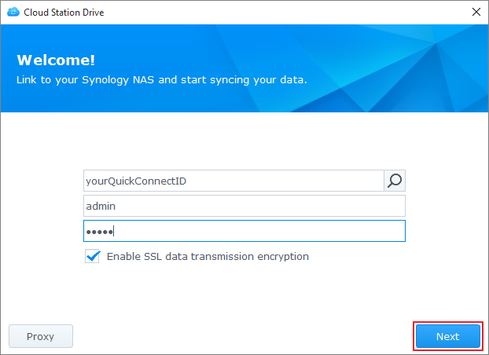
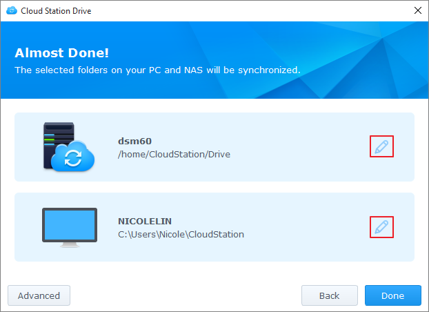
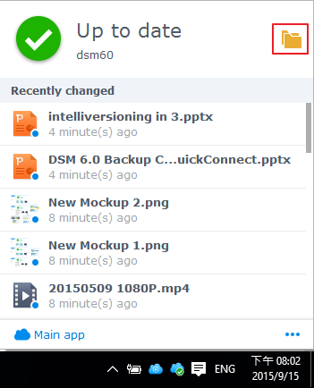

Overzicht
Cloud Station voor Synology NAS is een bestandssynchronisatietoepassing waarmee u eenvoudig bestanden van uw Synology NAS met andere apparaten kunt synchroniseren, zoals computers of mobiele apparaten (met DS cloud). Installeer Cloud Station Server op uw Synology NAS en Cloud Station Drive op uw computer om automatisch bestanden op uw computer te synchroniseren naar uw Synology NAS.
Een verbinding maken tussen Synology NAS en computer
- Ga naar Package Center, zoek Cloud Station Server en klik vervolgens op Installeren.
- Start Cloud Station Server op.
- In het tabblad Overzicht klik op de knop onder Cloud Station Drive om Cloud Station Drive voor uw besturingssysteem te downloaden. (U kunt Cloud Station ook downloaden vanaf Synology Downloadcenter.)
- Start het installatieprogramma op uw computer en volg de scherminstructies.
- Voer na de installatie Cloud Station uit op uw computer. Klik op Nu starten.
- Voer het adres in voor het Synology NAS waarop Cloud Station (of QuickConnect ID) wordt uitgevoerd, samen met uw gebruikersnaam en wachtwoord. U kunt op het zoekpictogram rechts klikken om naar IP's binnen uw LAN te zoeken. Klik op Volgende. 
- Selecteer de mappen die u wilt synchroniseren op uw Synology NAS en computer door op de pictogrammen Bewerken te klikken. Vervolgens klikt u op Geavanceerd om de synchronisatie-instellingen te configureren 
- Schakel de selectievakjes van mappen uit die u niet wilt synchroniseren.
- Stel een maximale bestandsgrootte, of zwarte lijst-bestandsnamen of bestandsindelingen in die niet moeten worden gesynchroniseerd.
- Selecteer of u in twee richtingen wilt synchroniseren of uitsluitend gegevens van uw Synology NAS wilt downloaden.
- Klik op Voltooid om de installatie te voltooien.
- U vindt het pictogram Cloud Station in uw systeemvak.
- Klik op het pictogram Systeemvak op het systeemvakmenu te openen. Hier kunt u de voortgang en status van uw bestanden bekijken. Hier kunt u de voortgang en status van uw bestanden bekijken. Klik op Hoofdtoepassing om Cloud Station te starten.
- Bij het opstarten worden tips getoond over het gebruik van Cloud Station. Klik op het rechterpijltje voor meer tips of klik op Onlinetutorials voor meer informatie. Hebt u geen tips nodig, schakel het selectievakje naast Niet meer weergeven in.
- Nu kunt u uw synchronisatietaken beheren inCloud Station Drive.


Een vorige versie van een gesynchroniseerd bestand downloaden
- Klik op het Cloud Station Drive-pictogram op uw systeembalk en klik op het mappictogram. 
- Rechtsklik op het geselecteerde bestand en selecteer Synology Cloud Station > Vorige versies doorbladeren.
- Zoek de versie die u wilt downloaden en klik op het pictogram Downloaden.


Een vorige versie van een op Cloud Station Server gesynchroniseerd bestand downloaden of terug te zetten
- Ga naar Cloud Station Server > Versiegeschiedenis en lokaliseer het bestand of de map die u wilt terugzetten.
- Selecteer het bestand dat u wilt terughalen en klik op Actie > Vorige versies doorbladeren.
- Selecteer de versie van het bestand dat u wilt downloaden en klik op Downloaden. Als u zeker weet dat u de geselecteerde versie wilt terugzetten, klikt u op Terugzetten waarna uw huidige versie overschreven zal worden.


Belangrijke opmerkingen
- Houd eerdere versies altijd bij voor het geval een bestand per ongeluk wordt verwijderd of overschreven.
- In Algemene instellingen kunt u configureren of een bestand van uw NAS zal worden teruggehaald of verwijderd als u een bestand op uw computer verwijdert.
Gegevens synchroniseren naar uw mobiele apparaten
DS cloud is gratis beschikbaar op Apple App Store en Google Play Store. U kunt ook de onderstaande QR-code scannen en rechtstreeks downloaden.